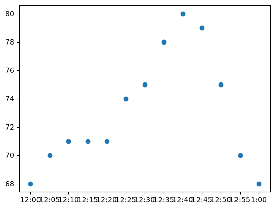
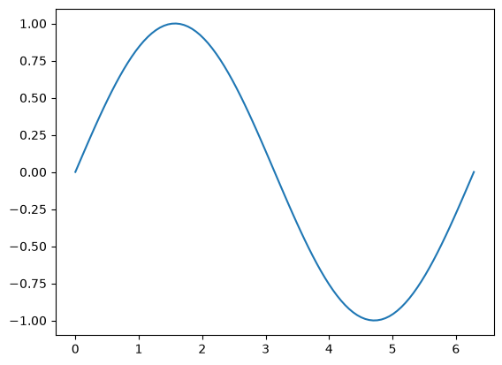
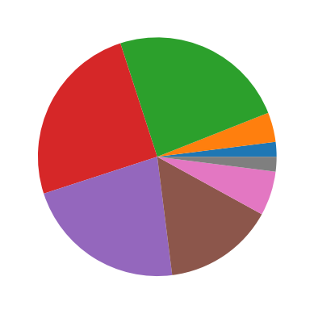
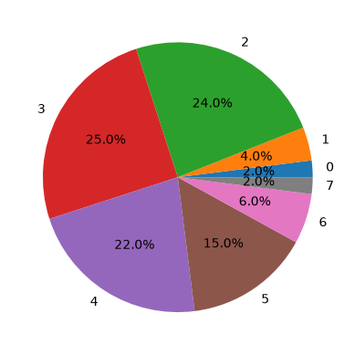
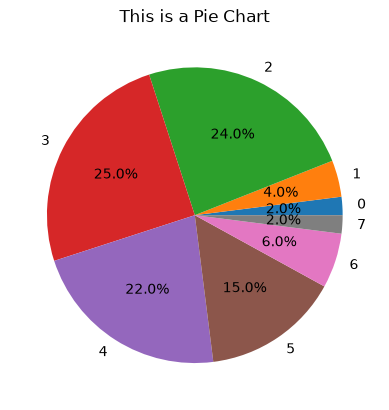
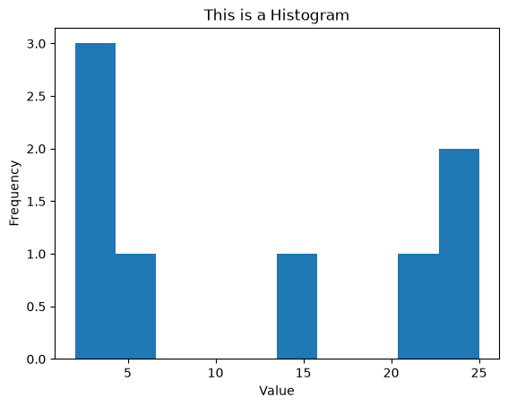
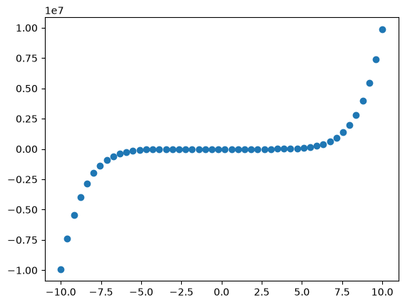

Week 3 Day 1 Lab#
This week we are going to cover data visualization libraries. We will focus a lot on techniques to make “nice” diagrams and what message we want to send to the reader.
The Matplotlib Library#
Matplotlib is Python’s standard plotting library. Virtually any type of diagram you require, Matplotlib has it. Moreover, there are many features you can tweak for your specific plot. Let’s cover some today. For a full list of what Matplotlib has to offer, see the documentation here: https://matplotlib.org/stable/api/index.html.
Problem 1#
Install
matplotlibImport
matplotlib.pyplotunder variable namepltImport
numpyunder variable namenp
!pip install matplotlib # run to install
ERROR: Invalid requirement: '#': Expected package name at the start of dependency specifier
#
^
import matplotlib.pyplot as plt # type import code here
import numpy as np
Matplotlib is building the font cache; this may take a moment.
Problem 2#
Given the following data
heartrate = [68,70,71, 71,
71, 74, 75, 78,
80, 79, 75, 70, 68]
time = ['12:00', '12:05', '12:10', '12:15',
'12:20', '12:25', '12:30', '12:35',
'12:40', '12:45', '12:50', '12:55', '1:00']
Use plt.scatter() to plot time along the x-axis and heartrate along the y-axis.
heartrate = [68,70,71, 71,
71, 74, 75, 78,
80, 79, 75, 70, 68]
time = ['12:00', '12:05', '12:10', '12:15',
'12:20', '12:25', '12:30', '12:35',
'12:40', '12:45', '12:50', '12:55', '1:00']
plt.scatter(time, heartrate)
<matplotlib.collections.PathCollection at 0x16cc538a850>

Problem 3#
Without adding any extra features (simply using plt.scatter()), the plot can be very uninformative.
Let’s add some tweaks:
We will rotate the x-labels so they aren’t horizontal
Add an x-axis label and a y-axis label
Add an informative title
We will use the following:
plt.xticks(rotation=45)plt.xlabel('x_axis_name_of_your_choice')andplt.ylabel('y_axis_name_of_your_choice')plt.title('title_of_your_choice')
To implement these, run all of these in the same cell .
plt.scatter(time, heartrate)
plt.xticks(rotation=45)
plt.xlabel('x_axis_name_of_your_choice')
plt.ylabel('y_axis_name_of_your_choice')
plt.title('title_of_your_choice')
Text(0.5, 1.0, 'title_of_your_choice')

Problem 4#
Recall:
np.linspace(start, stop, slice_count)producesslice_countamount of numbers betweenstartandstopnp.sin(x)calculates \(\sin(x)\) wherexis a single number or numpy array (whichnp.linspaceproduces)np.piproduces the irrational number \(\pi\approx 3.14159\)
Using these functions,
make a list
xdatathat contains 100 evenly spaced points between 0 and \(2\pi\)make a list
ysindatathat contains \(\sin(x)\) for each \(x\) inxdatause
plt.plot(xdata, ysindata)to plot the data
xdata = np.linspace(0, 2*np.pi, 100)
ysindata = np.sin(xdata)
plt.plot(xdata, ysindata)
[<matplotlib.lines.Line2D at 0x16cc5468410>]

Problem 5#
Using the same xdata from above, make a list ycosdata that contains \(\cos(x)\) for each \(x\) in xdata.
We can plot xdata against both ycosdata and ysindata simultaneously. To do so, use plt.plot(xdata, ysindata) and plt.plot(xdata, ycosdata) in the same cell.
ycosdata = np.cos(xdata)
plt.plot(xdata, ysindata)
plt.plot(xdata, ycosdata)
[<matplotlib.lines.Line2D at 0x16cc76db350>]

So far, these just look like two curves. To differentiate between the two curves, we can use the label attribute and a legend.
All in one cell:
Instead of
plt.plot(xdata, ysindata), useplt.plot(xdata, ysindata, label='Sine'). Likewise with the cosine data.Use
plt.legend()to plot the legend.
plt.plot(xdata, ysindata, label='Sine')
plt.plot(xdata, ycosdata, label='Cosine')
plt.legend()
<matplotlib.legend.Legend at 0x16cc54665d0>

Now we know which curve is which! But, we don’t have axis labels or a title. Add these in the following cell.
plt.xlabel('x value')
plt.ylabel('Function value')
plt.title('Cosine vs Sine')
plt.plot(xdata, ysindata, label='Sine')
plt.plot(xdata, ycosdata, label='Cosine')
plt.legend()
<matplotlib.legend.Legend at 0x16cc78fbe10>

Problem 6#
Consider the following data set that contains values between 0 and 7 (inclusive):
data = [4, 2, 4, 5, 0, 2, 4, 4, 3, 6, 1, 4, 5, 3, 1, 2, 3, 3, 4, 6, 4, 5,
2, 6, 5, 2, 3, 3, 4, 4, 2, 1, 4, 3, 2, 3, 6, 7, 3, 3, 3, 4, 2, 4,
3, 2, 2, 2, 4, 3, 2, 3, 4, 2, 5, 5, 3, 3, 5, 3, 2, 6, 2, 2, 4, 4,
2, 3, 4, 5, 2, 3, 4, 6, 2, 5, 2, 4, 5, 1, 5, 3, 3, 5, 0, 2, 3, 5,
3, 2, 2, 5, 7, 5, 3, 3, 4, 2, 4, 4]
Write a function that will take in
dataand outputs a listcountscontaining the number of each value indata. (Hint:data.count(i)gives you the count ofiindata)
data = [4, 2, 4, 5, 0, 2, 4, 4, 3, 6, 1, 4, 5, 3, 1, 2, 3, 3, 4, 6, 4, 5,
2, 6, 5, 2, 3, 3, 4, 4, 2, 1, 4, 3, 2, 3, 6, 7, 3, 3, 3, 4, 2, 4,
3, 2, 2, 2, 4, 3, 2, 3, 4, 2, 5, 5, 3, 3, 5, 3, 2, 6, 2, 2, 4, 4,
2, 3, 4, 5, 2, 3, 4, 6, 2, 5, 2, 4, 5, 1, 5, 3, 3, 5, 0, 2, 3, 5,
3, 2, 2, 5, 7, 5, 3, 3, 4, 2, 4, 4]
def count(dataset):
counts = []
for i in set(dataset):
counts.append(dataset.count(i))
return counts
count(data)
[2, 4, 24, 25, 22, 15, 6, 2]
Use
plt.pie(counts)to produce a pie chart ofdata.
counts = count(data)
plt.pie(counts)
<matplotlib.container.PieContainer at 0x16cc7947990>

Define
labels = [0, 1, 2, 3, 4, 5, 6, 7]and useplt.pie(counts, labels = labels, autopct='%1.1f%%')to produce more informative plot
labels = [0, 1, 2, 3, 4, 5, 6, 7]
plt.pie(counts, labels = labels, autopct='%1.1f%%')
<matplotlib.container.PieContainer at 0x16cc5424b90>

Add an informative title and produce the new plot in the cell below.
plt.title("This is a Pie Chart")
plt.pie(counts, labels = labels, autopct='%1.1f%%')
<matplotlib.container.PieContainer at 0x16cc54de410>

Problem 7#
Using the same data set as above, use plt.hist() to produce the histogram of the data set. Add a title and labels.
plt.hist(counts)
plt.title('This is a Histogram')
plt.xlabel('Value')
plt.ylabel('Frequency')
Text(0, 0.5, 'Frequency')

Problem 8#
Plot a function of your choosing to plot using plt.scatter().
x = np.linspace(-10,10)
plt.scatter(x,x**7-x**5)
<matplotlib.collections.PathCollection at 0x16cc559f090>
